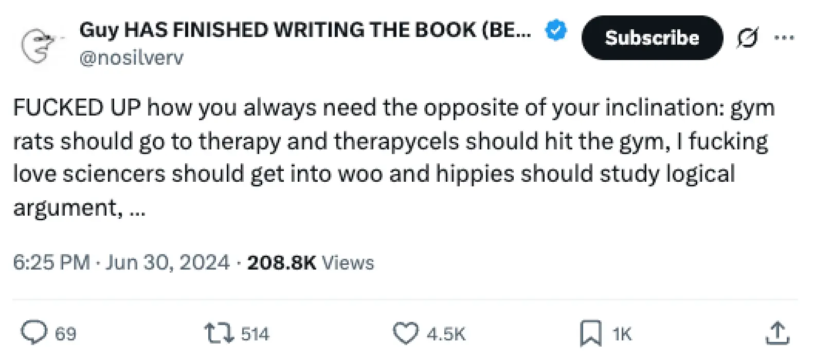

- 2025-07-26
1. Intro
- So, I’ve achieved big milestones in two of my open questions:
- “How to help my family” → I’m now going to go to in-person family therapy with my mum!
- “How should I make money?” → I’ve now landed a paid contractor gig that I’ll be starting in two days
- I’ve been in a very odd low-energy limbo era as a result of “achieving” these two things…
- The question is - what now?
2. How much family stuff do I have appetite for?
- I came up with the analogy for my recent family sprint (where I learned about Bowen family systems theory, had a call with a family therapist, prepared to pitch going to family therapy with my mum, and then did the pitch to her on a walk)
- It’s like there was this huge stone door that I figured I probably wouldn’t be able to open, but it’d be cowardly to not try. So I trained for a few weeks, and tried - and it actually opened a small amount
- And then there’s a daunting feeling of - “if the door didn’t budge at all, then I’d be able to walk away and still feel like I gave it a go”. But now, it actually has moved somewhat, and it’s like “oh shit, I do have agency here, there is promise - but how much appetite do I really have?”
Even if things are dramatically improved
- Even if I successfully improve the family system - we’re still a very small family, and everyone still lives in a part of England that… it just feels like there’s nothing for me here! I think London or Oxford (or a different country) is where I’m much more likely to find “my people”
Idea for an aim → leave in a healthier way?
- Excerpts from Jenny Brown’s book “Growing Yourself Up”:
Re: “leaving the home” in an unhealthy way
“At the other end of the pole is the young person who struggles to be separate from their parents’ life. They may distance themselves for a time, when things become too intense in their relationship, but continue to be emotionally and financially interdependent. This person is more vulnerable to going through life fusing into others’ lives in the same way they did with a parent. They can struggle to live life without borrowing support and validation from others.”
“At the distancing end of the spectrum, we may not have run away and cut off all contact with our parents but instead keep a superficial formality to our contact. When our visits home become a matter of duty, where nothing real is shared, this reflects our use of distance to gain independence. There’s hollowness in these visits home and we come to see our parents more as a burden than a resource to us. This same dance can later be repeated in our marriages and with our children.”
Reconnecting
“If we can’t be more real with our parents it will be hard to maintain authenticity in any committed or important relationship.”
“At any stage of life, one of the best forums for growing up is in reconnecting with our original family and forging a more mature relationship with each family member. If we can learn to be in contact with our parents and siblings without falling back into any old ways of managing family anxiety such as distancing, blaming or rescuing, we can make some genuine progress towards maturity. Many people I have worked with have initially struggled to see the benefits of recontacting family members who seem so different to them.”
“For many people like Anthony, as they begin to take steps towards less anxious ways of relating to their parents, they discover the paradox that making more contact with family members actually helps them to separate or ‘leave home’ in a more constructive way.”
“Reconnecting with parents and with adult children doesn’t always lead to harmonious relationships. In some cases it may simply mean a more open, honest and therefore more adult relationship—even if this seems like it is only coming from one side.
It may not be pleasurable to make contact with family members when we find their behaviour and life choices difficult to respect, but the gain in our own maturity as we move from blame to understanding can make it worth the effort. And over the long haul, the maturity effort of one person begins to ripple to other parts of the family and surprising effects sometimes emerge.
“If you can achieve a steadiness in the intense emotional field of the family you grew up in, you’re better prepared to express yourself maturely in the most challenging of relationship situations in other parts of your life. It’s never too late to rethink how you left home. In the process of going home again with more awareness of yourself in the fabric of your family history, you may be surprised to discover a depth of friendship with family members that you never imagined was possible.”
Reconnect with various family members?
- Do a “reconnection tour”
- Idk if my Dad and his side of the family would be involved - I haven’t spoken to him all year. Feels like a bigger project
3. “Alex is Learning (To Connect)”
- Something that’s been on my mind recently is:
- How much do I really need to “learn how to think”? Isn’t this website enough?
- I’ve been learning about philosophy, and I trialed a few tutors last week via Superprof
- But then I saw this tweet:
- How much do I really need to “learn how to think”? Isn’t this website enough?

- And it does feel true that, looking at my life → thinking isn’t necessarily the #1 bottleneck
- I probably have the 80/20 down at this point
- It definitely could be true that, now I have income, and am on the path to “leaving home in a healthy way”, post-family therapy, the next step is living in a group house or intentional community and like, just learning to hang out, and to value it correctly
I’ve been a “lone wolf” for years now
But I know that socialising is important
- Running out of energy, so, just quickly:
- Pretty much all happiest memories are with people
- Skill issues re: connecting in person (e.g. JessCamp, Life Itself)
- Social skills (perspectival and procedural) as open question
- The amount of social podcasts I listen to!
- Similar to Should I meditate regularly? (2025-07-20), I’d like to write something up like Should I value in-person connection highly? (first pass)
4. Currently in limbo
- Waiting for family therapy session 1
- Waiting to start contractor role
- In a village with no car, no in person friends, and no live projects (/the total inability to make myself do anything)
- Suddenly feel like I have nothing to do. Bored, but totally lacking the energy to make myself do anything work-shaped, productive-shaped. It’s like my Apollian reserves are just totally empty
- So I had fun playing Minecraft for the first time since I was a teenager, but that now feels hollow too